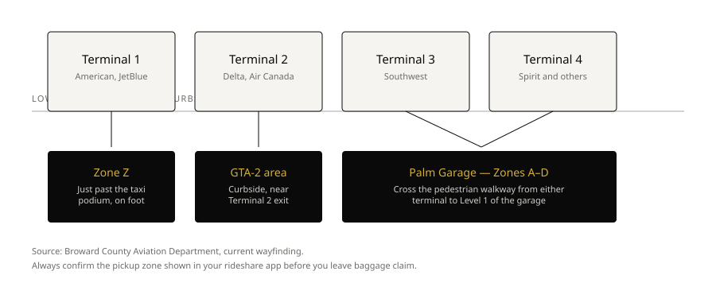

Journal · South Florida Airport Guide
The cheapest ticket isn't always the fastest trip. In South Florida, the right airport can save more time than the right flight — once baggage claim, terminal walking, I-95 traffic, and the final drive are counted.
Miami International (MIA), Fort Lauderdale-Hollywood International (FLL), and Palm Beach's airport serve one continuous metro region, but they are not interchangeable. A traveler staying in Brickell may save time paying slightly more for a flight into MIA. A family headed to Aventura may land closer to their destination at FLL. A passenger bound for Palm Beach could lose over an hour by defaulting to Miami simply because "Miami" is in the name.
This guide compares the three from the perspective that matters after the aircraft door opens: how quickly and comfortably you reach your actual destination.
2026 naming update: Palm Beach International Airport was officially renamed President Donald J. Trump International Airport on July 9, 2026, and its passenger-facing IATA code changed from PBI to DJT on August 18, 2026. Some airlines and booking sites may still show PBI — search either code for flights.
At a glance
| Destination | Usually best | Alternative | Note |
|---|---|---|---|
| Brickell / Downtown Miami | MIA | FLL | Downtown congestion can still change timing. |
| Coral Gables / Coconut Grove | MIA | FLL | Avoids the long southbound run from Broward. |
| South Beach | MIA | FLL | Causeway traffic can matter as much as distance. |
| Bal Harbour / Surfside | MIA or FLL | — | Compare flight schedule and arrival time. |
| Aventura / Sunny Isles | FLL | MIA | Usually shorter transfer, less central-Miami driving. |
| Hollywood / Fort Lauderdale | FLL | MIA | Normally the clear geographic choice. |
| Boca Raton | DJT | FLL | FLL may offer a better fare or nonstop. |
| Palm Beach / West Palm Beach | DJT | FLL | Flying into Miami often adds unnecessary ground travel. |
| Florida Keys | MIA | FLL | Shortest start toward US-1. |
| PortMiami cruise terminal | MIA | FLL | Build in a buffer for cruise-day traffic. |
| Port Everglades | FLL | MIA | Adjacent to the Fort Lauderdale cruise corridor. |
These are geographic starting points, not guarantees — traffic, weather, construction, events, and airline schedules can change the result.
01 · Miami-Dade
South Florida's primary international gateway and the airport with the broadest global reach — usually the natural choice for travelers from Latin America, the Caribbean, and many long-haul markets, plus anyone headed to central or southern Miami-Dade.
Its strength is flight selection. Its tradeoff is scale: North, Central, and South terminal areas, multiple concourses, and airline-specific pickup doors. A flight-tracked chauffeur earns its keep here.
Best for: Brickell, Downtown Miami, Coral Gables, Coconut Grove, Key Biscayne, Doral, South Miami, Kendall, the Florida Keys, and usually PortMiami and South Beach.
What travelers underestimate
"Arrived" isn't the same as "curbside." International passengers still taxi to the gate, walk to immigration, clear passport control, collect baggage, and pass customs. Even a domestic flight with a checked bag adds real time.
Onyx tip: for an international arrival, send the flight number and confirm if you're checking bags — "landed" and "ready for pickup" can be very different moments.
02 · Broward
Often called the smaller alternative to MIA — but for northern Miami-Dade and Broward, it's frequently not the alternative, it's the better airport. Four terminals, generally an easier layout than MIA.
Best for: Fort Lauderdale, Hollywood, Dania Beach, Hallandale Beach, Aventura, Sunny Isles Beach, Golden Beach, much of northern Miami Beach, and Port Everglades.
A slightly higher fare into FLL can be worth it if it removes a long central-Miami transfer — especially for families, tired travelers, and anyone with a meeting soon after landing. For Brickell, Coral Gables, or the Keys, though, the southbound drive can erase that advantage.
03 · Palm Beach County
Palm Beach County's main commercial airport, and the most compact terminal experience of the three. Officially renamed President Donald J. Trump International Airport as of July 9, 2026 — the passenger code changed from PBI to DJT on August 18, 2026.
Best for: West Palm Beach, Palm Beach, Palm Beach Gardens, Wellington, Delray Beach, and Boca Raton when the flight schedule works.
The tradeoff: fewer routes than MIA or FLL. A connection added just to use the closest airport can take longer than a nonstop into FLL plus a ground transfer — weigh both sides of the trip.
Curbside reality
Airport size drives pickup time more than anything else. MIA is the largest of the three by a wide margin — multiple concourses, several ground transportation doors, and a longer walk from most gates to the curb. FLL's footprint is smaller. That difference alone accounts for most of the gap below.
MIA
Based on Onyx trip records. Ground transportation is on Level 1 for most concourses; ride-app pickups split across Level 1 (Arrivals) and Level 2 (Departures), so the exact door matters as much as the terminal.
FLL
Based on Onyx trip records — typically faster than MIA, largely a function of the smaller terminal footprint. Terminal 1 rideshare pickup is at Zone Z, just past the taxi podium. Terminals 3 and 4 route through Zones A–D inside the Palm Garage, across a pedestrian crosswalk.

DJT pickup logistics: ground transportation is on Level 1 near baggage claim; rideshare pickup is one level up, on the outer curb of Level 3 — Departures. Onyx trip volume through DJT isn't yet high enough to publish a reliable time range.
Decision framework
Traffic reality
South Florida's three airports sit along a north-south corridor, but transfers don't happen on an empty map. I-95 congestion, lane closures, rain, cruise traffic, and events can all change the journey. Beach destinations add a final bottleneck: a hotel can look close in a straight line while still requiring a slow run through a limited number of causeways.
Arrival reality
A flight can show "arrived" while still taxiing. After that: gate, immigration, baggage, customs, and the walk out. Professional pickup uses flight tracking plus direct communication with the passenger — not just a landing alert.
Bottom line
Choose MIA for the widest international network and most trips to Brickell, Downtown Miami, Coral Gables, Coconut Grove, South Miami, PortMiami, and the Florida Keys.
Choose FLL for Fort Lauderdale, Hollywood, Port Everglades, Aventura, Sunny Isles, and many trips to Bal Harbour or northern Miami Beach.
Choose DJT for Palm Beach, West Palm Beach, Palm Beach Gardens, Delray Beach, and often Boca Raton when its schedule is competitive.
The rule that matters most: don't choose an airport by city name alone. Compare the complete journey from departure to the exact door of your South Florida destination.
FAQ
Related
Flight-monitored pickup for Brickell, Miami Beach, Coral Gables, and PortMiami.
The practical choice for Fort Lauderdale, Aventura, Sunny Isles, and Port Everglades.
Private transportation for Boca Raton, Delray Beach, and Palm Beach.
A second Onyx-standard vehicle already based in the Broward corridor.
Send your flight options and final destination — we'll help compare the ground-transfer logic and give a fixed quote before you book.
Editorial note: airport names, codes, schedules, and traffic conditions can change. This guide was last updated August 31, 2026. Confirm current flight and terminal information with your airline before departure.